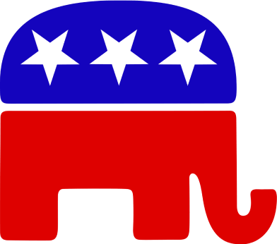

REPUBLIC
Search
Republican - Tokenomics
Article
Talk
96%LP - 5% MKT
"GOP" redirects here. For other uses, see. For the 1792-1834 party, see
Democratic-Republican Party
.
The Republican Party
, also known as the
GOP (Grand Old Party)
, is one of the
two major
contemporary
political parties in the United States
. It emerged as the main political rival of the
democratic Party
mid-1850s.